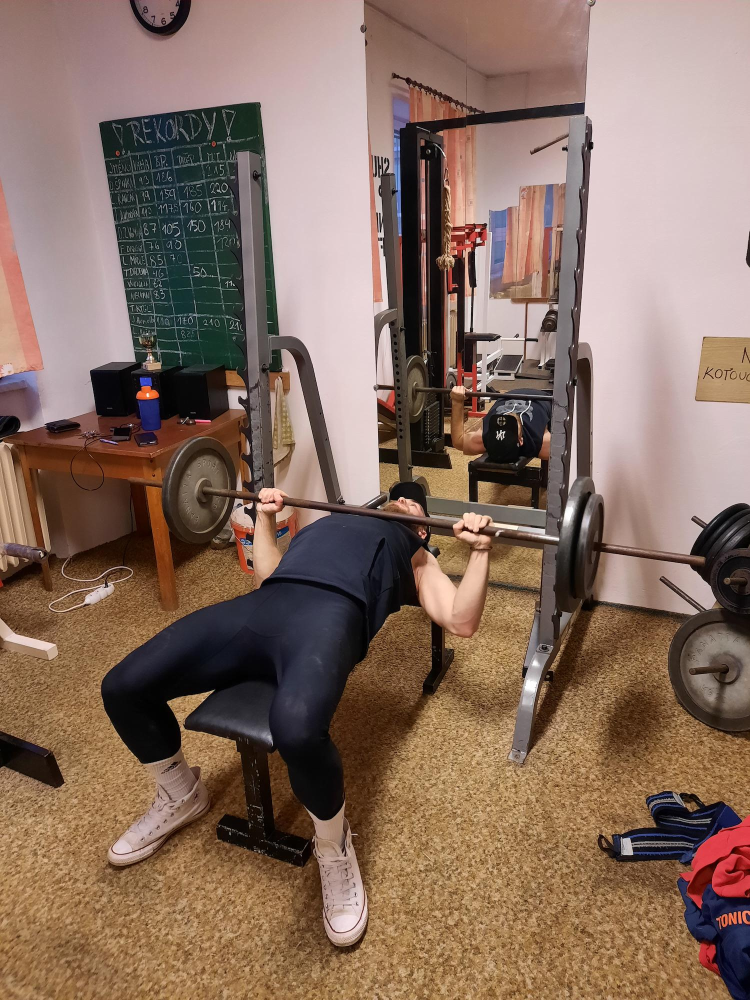

Bench press
Velmi efektivní na budování svalového objemu a síly prsních svalů, tricepsů a ramen.
Primárně jsou zapojeny prsa, ramena a triceps. Kromě těchto svalů se zapojují i zadní ramena, hamstringy, gluteály, mezilopatkové svaly a široké svaly zádové.
Celý cvik se provádí v leže na lavici. Nohy na zemi (Některé varianty se provádí bez dotyku na zem) záda mírně prohnuté tzv. most (nedoporučuje se dělat do extrému může dojít ke zranění) lopatky k sobě. Úchop záleží na variantě (úzký / široký).
- Ohýbání zápěstí
- Odrážení osy od hrudníku
- Neaktivování svalů
